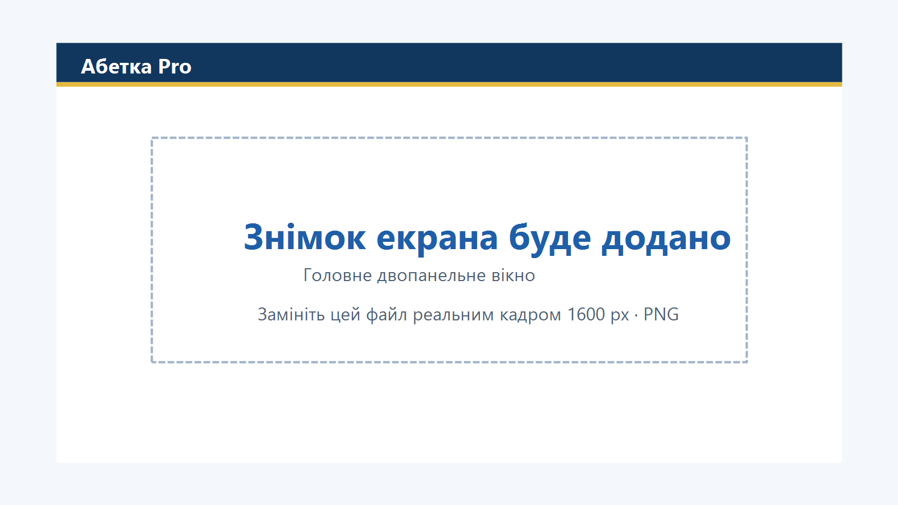
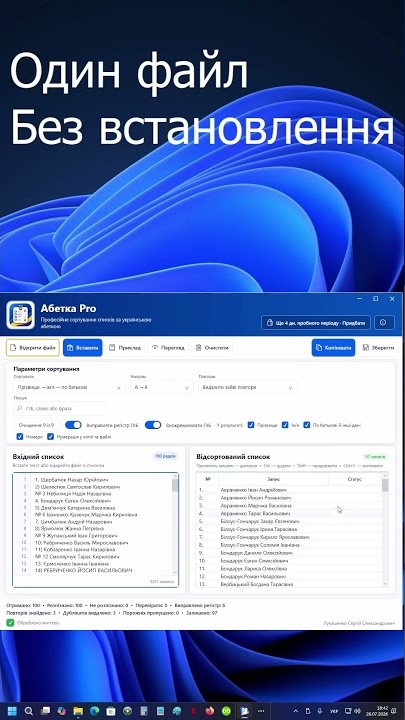
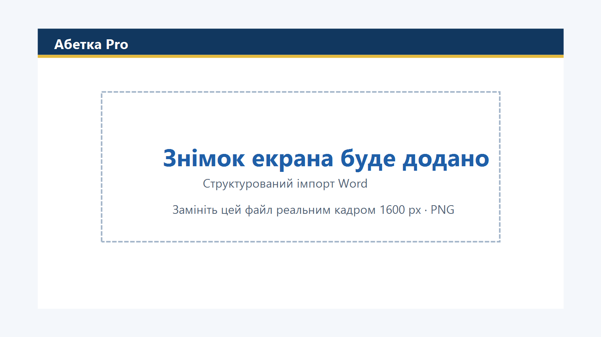
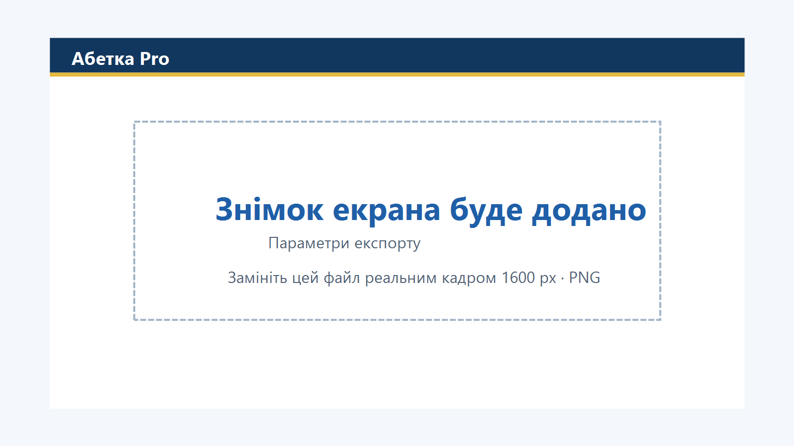

{kind=link}
Перша професійна українська
Програму зроблено для української абетки й українських імен. Підходить установам, навчальним закладам, кадровим службам і для особистого користування.
Українська. Офлайн. Portable
Упорядковуйте списки працівників, клієнтів, учасників і здобувачів освіти у звичному робочому процесі — локально, точно та без передавання даних.
ZIP, 1,5 МБ · Windows 10/11 64-біт · 7 днів без обмежень · без установлення

Три головні переваги
Програму зроблено для української абетки й українських імен. Підходить установам, навчальним закладам, кадровим службам і для особистого користування.
Робота повністю без інтернету: ні хмари, ні телеметрії, ні облікового запису. Списки людей залишаються там, де ви їх відкрили.
Один файл запускається з будь-якої папки або флешки. Права адміністратора не потрібні — це важливо на робочих комп’ютерах установ.
Що робить програма
Усі основні дії зібрані в одному двопанельному вікні, а вихідні файли програма не змінює.
Сортування
Точний порядок А, Б, В, Г, Ґ, Д, Е, Є… з коректним урахуванням І, Ї та Й.
ПІБ
Сортування за прізвищем, ім’ям, по батькові, усім рядком або їх послідовною комбінацією.
Нормалізація
Три технічні варіанти апострофа, дефіси, зайві пробіли та початкова нумерація обробляються послідовно.
Регістр
Прізвище, ім’я та по батькові з малої літери або набрані великими набувають правильного вигляду. Складене ім’я через дефіс — «Анна-Марія» — з великої з обох боків, а апостроф нового слова не починає: виходить «Лук’яненко». Поля з цифрами, адресами й поштою програма не чіпає.
Імпорт
DOCX, XLSX, текстовий PDF, TXT, CSV, TSV, вставлення тексту й перетягування файла у вікно.
Повтори
Залишити всі, позначити, зберегти перший або останній запис чи вилучити лише зайві копії.
Пошук
Пошук іде окремо по прізвищу, імені та по батькові, а також по решті рядка — телефону, класу чи примітці. Регістр значення не має, а апостроф узагалі не враховується: «Лукʼяненко» знаходиться будь-яким із трьох варіантів написання. Збіги підсвічуються просто в списку, з лічильником і переходом між ними, — жоден рядок не ховається.
Збереження
Результат зберігається у Word, Excel і PDF, а також у TXT, CSV та TSV — увесь список або лише виділені рядки. Вихідний файл програма не змінює: вона завжди створює новий.
Навантаження
Автоматизовані навантажувальні перевірки охоплюють великі документи Word і Excel.
Результат
У Word — список або таблиця; у PDF — A4, 11–14 пт, книжкова чи альбомна орієнтація.
Також приймає текст із буфера обміну та файл, перетягнутий у вікно. Для Word і Excel перед імпортом відкривається попередній перегляд, де видно рядок заголовків і ролі колонок. PDF має містити текстовий шар: скан без розпізнавання програма чесно відхиляє.
У Word — звичайний список або накреслена таблиця з нумерацією; ПІБ одним стовпцем чи трьома окремими, межі за бажанням. У Excel — так само повне ПІБ або окремі колонки. У PDF — багатосторінковий A4, книжкова чи альбомна орієнтація, розмір 11–14 пт, необов’язковий заголовок і нумерація.
Як це працює
Перший список можна підготувати за кілька хвилин.
Вставте текст із буфера обміну або відкрийте підтримуваний файл.
Укажіть поле сортування та напрям А → Я або Я → А.
Спочатку позначте однакові записи, а потім оберіть потрібну дію.
Скопіюйте список або експортуйте його у Word, Excel, PDF чи текстовий формат.
Відео
Тридцять секунд без зайвих слів: невпорядкований список перетворюється на готовий документ. Знято з екрана, без монтажних хитрощів.
Відео завантажується з YouTube лише після натискання кнопки — доти сторінка не звертається до сторонніх серверів і не отримує від них жодних файлів спостереження.

Знімки екрана
Головне вікно показано вище, у шапці сторінки. Тут — окремі етапи роботи.


Приватність за замовчуванням
Сортування, пошук повторів, попередній перегляд та експорт виконуються локально. Програма не має хмари, телеметрії, реклами чи облікових записів.
Ліцензійний ключ також перевіряється офлайн. Розробник не отримує вміст ваших списків, якщо ви самі не надішлете приклад у зверненні.
Прочитати повідомлення про конфіденційністьБез підключення до інтернету для сортування, імпорту й експорту
Без автоматичного надсилання статистики та звітів про помилки
Вихідні файли створюються лише у вибраному вами місці
Придбати
Перед оплатою можна перевірити всі можливості програми протягом 7 календарних днів.
Домашня ліцензія
290 грн одноразово
Корпоративна ліцензія
10–200 комп’ютерів із кроком 10
Надішліть лист на адресу нижче. Нічого реєструвати не треба — у відповідь надійдуть реквізити для оплати й час, за який ви отримаєте програму. Платіж один, ліцензія діє без обмеження строку.
Адреса для замовлень
sergeymusic0304@gmail.com
Якщо кнопка не відкрила поштову програму — на цьому комп’ютері її просто не налаштовано. Це нормально: скопіюйте адресу й шаблон і надішліть лист зі своєї пошти у браузері.
Шаблон листа — скопіюйте й доповніть
Кому: sergeymusic0304@gmail.com Тема: Замовлення «Абетка Pro» Добрий день! Хочу придбати програму «Абетка Pro» (пожиттєва ліцензія — 290 грн). 1. ПІБ або назва організації (буде вписано в іменну ліцензію): … 2. Кількість пристроїв (комп’ютерів): … 3. Призначення (особисте / компанія чи установа / навчальний заклад): … 4. Зручний спосіб оплати (переказ на картку / IBAN / інше): … 5. Контакт для зв’язку (якщо не ця пошта): … Дякую!
Технічні вимоги й безпека
Скановані PDF без текстового шару програма не розпізнає. Для них потрібне попереднє розпізнавання тексту (OCR).
Вона дає змогу перевірити, що ZIP-файл завантажився без змін.
471C343C0B068C2EFF55929DB04BC89DDE20B453FA5C4446007F33B821565995
У PowerShell відкрийте папку із завантаженим ZIP і виконайте:
Get-FileHash -Algorithm SHA256 -LiteralPath '.\Abetka-Pro-1.0.0-win-x64-portable.zip'
Отримане значення має посимвольно збігатися з наведеним вище.
Часті питання
Ні. Сортування, імпорт, пошук, експорт і перевірка ключа виконуються локально.
Ні. Розпакуйте ZIP і запустіть EXE. Права адміністратора не потрібні.
Дії програми блокуються до активації ліцензійного ключа. Упродовж пробного періоду можливості не обмежені.
Ні. Після заміни техніки або перевстановлення Windows введіть свій ключ знову.
Так, для 10–200 комп’ютерів передбачена корпоративна ліцензія з одним ключем на організацію.
Ні. Вихідні DOCX, XLSX і PDF відкриваються лише для читання, а результат зберігається в новий файл.
Ні. PDF повинен мати текстовий шар; програма не виконує OCR і чесно повідомляє про скан.
Нікуди: вони залишаються на вашому комп’ютері. Програма не має телеметрії, хмари чи функції надсилання списків.
7 календарних днів без обмеження можливостей.
«Абетка Pro» — 7 днів безкоштовно, без установлення
Завантажити